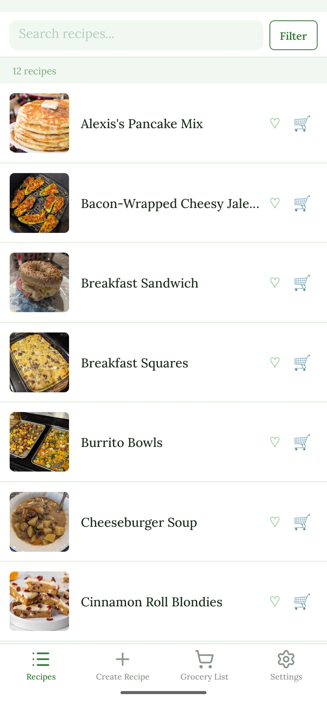
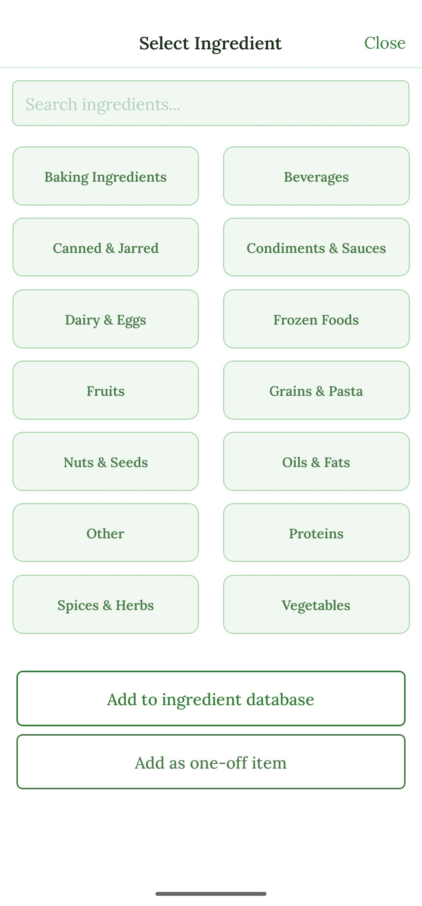
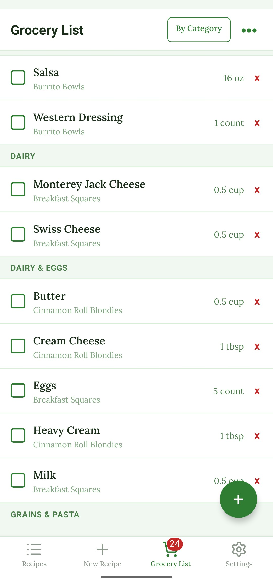

Personal Project
PantryPal
A cross-platform mobile app for storing recipes and automatically generating grocery lists based on what you want to cook.
React Native
TypeScript
Expo
AsyncStorage
My Role
Sole developer. Designed and built the entire application from scratch — including the UI, navigation, data model, local persistence layer, and grocery list generation logic.
Project Type
Personal project, built for everyday use.
Screenshots




Overview
PantryPal is a personal utility app I built to solve a problem I ran into constantly — keeping track of recipes and figuring out what to buy at the grocery store. The app lets you create and store detailed recipes with ingredients, serving sizes, and notes. When you decide what you want to make for the week, it aggregates the ingredient lists across your selected recipes and generates a consolidated grocery list automatically. All data is stored locally on-device using AsyncStorage, so the app works fully offline with no account or backend required.
Challenges & Problems Solved
- Built the app entirely in TypeScript and React Native, both of which were new to me at the start of the project — required learning the type system, component model, and mobile-specific APIs simultaneously.
- Designed a data model flexible enough to support variable ingredient counts, optional fields, and future extensibility, stored entirely in AsyncStorage without a relational database.
- Implemented a grocery list generator that merges ingredients across multiple selected recipes, consolidating duplicate entries, merging units, and organizing the output for practical use in a store.
- Built a clean, touch-friendly UI optimized for quick access on mobile, including smooth navigation between the recipe list, detail views, and grocery list screen.